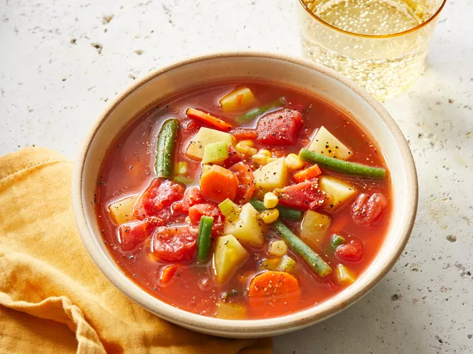

Soup

Vegetable Soup
This vegetable soup recipe is a low-fat but filling tomato-based vegetable soup.
I use fresh vegetables when in season, frozen or canned in winter.
Ingredients
- 1 (14.5 ounce) can diced tomatoes
- 1 (14 ounce) can chicken broth
- 1 (11.5 ounce) can tomato-vegetable juice cocktail
- 2 carrots, sliced
- 2 stalks celery, diced
- 1 large potato, diced
- 1 cup chopped fresh green beans
- 1 cup fresh corn kernels
- 1 cup water
- salt and pepper to taste
- 1 pinch Creole seasoning, or more to taste
Steps
-
Gather all ingredients.
- Combine tomatoes, chicken broth,
tomato juice, carrots, celery, potato, green beans, corn, and water in a large stockpot.
Season with salt, pepper, and Creole seasoning.
-
Bring to a boil over medium heat and simmer until vegetables are tender,
about 30 minutes.
-
Serve hot and enjoy!